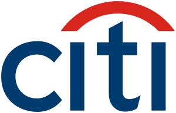

홈 > 브랜드 매거진 > 한국씨티은행
한국씨티은행
한국씨티은행(Citibank Korea)은 미국 씨티그룹이 지배하는 대한민국의 외국계 시중은행이다.
산업 분야 브랜드·비즈니스 · 공개 등급 자료 기반 · 브랜드 평가 4 ★

한눈에 보는 브랜드
한국씨티은행은 미국 씨티그룹을 모회사로 둔 외국계 시중은행으로, 1983년 출범한 한미은행을 뿌리로 한다. 첫 전환점은 2004년 씨티의 한미은행 지분 인수와 씨티은행 서울지점 합병을 통한 출범이며, 두 번째 전환점은 2021년 본사 씨티그룹이 한국을 포함한 13개국 소비자금융 철수를 발표하면서 시작된 소매금융 단계적 폐지다.
이후 한국씨티은행은 기업금융 중심으로 사업 구조를 재편하며 외환·자금관리·투자은행 영역에 역량을 집중하고 있다.
브랜드 관점
한국씨티은행의 정체성은 국내 시중은행과 글로벌 투자은행의 경계에 걸쳐 있다는 점에서 출발한다. 4대 시중은행이 광범위한 지점망과 리테일 기반으로 경쟁하는 한국 시장에서, 씨티은행은 2021년 소매금융 철수 결정을 기점으로 정반대 길을 택했다.
자사 강점인 다국적 기업 대상 외환·무역금융·현금관리 같은 고마진 기업금융과 글로벌 네트워크 연계 영역에 자원을 몰아넣은 것이다. 이 선택의 함의는 명확하다.
개인 고객 거래를 사실상 접는 대신, 본사 차원의 자본 효율성 기준에 맞춰 수익성 높은 영역만 남기는 글로벌 표준 전략의 한국판이다. 실제로 철수 이후 비이자수익과 당기순이익이 개선되며 전략의 수치적 정당성은 확보되고 있다.
다만 한국 독자 입장에서 이는 양면적이다. 한때 선진 금융기법과 자산관리 노하우의 상징이었던 외국계 리테일 은행이 사라지는 흐름을 보여주는 동시에, 외국 자본이 한국 시장을 평가하는 냉정한 잣대(규모보다 자본 회수율)를 드러낸다.
잔여 소매 고객 이전을 위해 iM뱅크, 우체국 등과 제휴를 맺은 과정은 철수의 실무적 난이도를 보여주는 사례다.
시작과 성장
한국씨티은행의 시작은 1980년대 초로 거슬러 올라간다. 정부가 금융 자율화와 외자 유치를 추진하던 시기, 삼성·대우 등 국내 자본과 미국 뱅크오브아메리카가 합작해 1983년 3월 한미은행을 설립했다.
신한은행에 이은 후발 시중은행으로 출발한 한미은행은 1980년대 후반 외국 측 지분이 줄며 사실상 한국계 은행으로 자리 잡았다. 첫 번째 전환점은 2004년이다.
미국 씨티은행이 스탠다드차타드·HSBC 등 경쟁자를 제치고 한미은행 지분을 대거 인수했고, 같은 해 11월 기존 씨티은행 서울지점을 한미은행 법인에 합쳐 한국씨티은행을 출범시켰다. 통합 직전 노동조합은 18일간의 파업으로 인위적 구조조정을 막아내며 합병 위로금 등을 관철했다.
이로써 외국계 자본이 국내 시중은행을 직접 소유·운영하는 구도가 자리 잡았다. 두 번째 전환점은 2021년으로, 본사 씨티그룹이 한국을 포함한 다수 국가의 소비자금융 철수를 발표하면서 한국씨티은행은 소매금융을 단계적으로 정리하고 기업금융 전문 은행으로 방향을 틀었다.
브랜드 아이덴티티
한국씨티은행의 핵심 가치는 글로벌 네트워크 기반의 전문성과 신뢰다. 한때 외국계 은행 특유의 자산관리·프라이빗뱅킹 노하우로 고소득층과 다국적 기업이라는 타깃층에서 차별적 위상을 누렸다.
비주얼 아이덴티티는 모회사 씨티그룹과 공유하는 붉은색 곡선의 우산 형상 심벌과 도시(City)를 연상시키는 푸른 워드마크로, 글로벌 단일 브랜드 체계를 따른다. 브랜드 보이스는 국제 표준에 부합하는 정교함과 안정성을 강조하며, 내부적으로는 본사와의 일체감을 담은 '원 씨티, 원 팀' 같은 통합 메시지를 활용해 왔다.
소매금융 축소 이후에는 기업과 기관 고객을 중심으로 한 전문 금융 파트너라는 정체성이 더욱 선명해지고 있다.
제품과 서비스
현재 한국씨티은행은 기업·기관 고객 중심의 금융 서비스에 집중한다. 핵심 품목은 기업대출과 무역금융, 외환·파생, 현금관리(자금관리) 서비스이며, 글로벌 네트워크를 활용한 해외 투자와 투자은행 업무도 제공한다.
채널은 본사와 연계된 디지털 기업금융 플랫폼과 소수의 영업 거점으로 운영되며, 과거 핵심이던 개인 예적금·카드·자산관리 등 소매 상품은 단계적으로 폐지되어 잔여 고객 대상 만기 관리와 타행 이전 지원이 중심이 되고 있다.
현재 상태
본사는 서울특별시 종로구 새문안로에 위치한다. 지배구조상 미국 씨티그룹(씨티은행 N.A.)이 절대다수 지분을 보유한 외국계 은행으로, 국적은 대한민국 법인이다.
은행장은 유명순으로, 2020년 선임된 국내 민간은행 최초의 여성 행장이며 기업금융 전문가다. 최신 현황으로는 2025년 총수익 약 1조원, 당기순이익 약 3,074억원을 기록하며 기업금융 중심 전략의 성과가 가시화됐고, 같은 해 잔여 소매 고객 편의를 위해 iM뱅크 등과 제휴를 확대했다.
정확한 임직원 수와 일부 세부 재무 지표는 미공개.
타임라인
정리된 연도형 이벤트가 없습니다.
BI/CI 변천사
함께 읽을 브랜드
 브랜드·비즈니스 · 편집 검수Citibank
브랜드·비즈니스 · 편집 검수Citibank씨티(Citi)는 미국 씨티그룹이 운영하는 글로벌 소비자·기업 금융 브랜드로, 1812년 뉴욕에서 출발한 시티뱅크 오브 뉴욕을 뿌리로 한다. 빨강 아치가 워드마크 위...
 브랜드·비즈니스 · 편집 검수Deezer
브랜드·비즈니스 · 편집 검수DeezerDeezer는 2023년에 기록된 Designed by Koto 계열의 브랜드 아이덴티티 사례입니다. Koto가 아이덴티티 작업의 디자이너로 기록되어 있습니다. 공개...
Nu
Nuud
브랜드·비즈니스 · 편집 검수NuudNuud는 2021년에 기록된 Designed by Mother 계열의 브랜드 아이덴티티 사례입니다. Mother Design가 아이덴티티 작업의 디자이너로 기록되어...
Ch
Church
브랜드·비즈니스 · 편집 검수ChurchChurch는 2025년에 기록된 Designed by Porto Rocha 계열의 브랜드 아이덴티티 사례입니다. Porto Rocha가 아이덴티티 작업의 디자이너로...
 브랜드·비즈니스 · 편집 검수Japan Post
브랜드·비즈니스 · 편집 검수Japan PostJapan Post는 2003년에 기록된 Designed by Landor 계열의 브랜드 아이덴티티 사례입니다. Landor가 아이덴티티 작업의 디자이너로 기록되어...
 브랜드·비즈니스 · 편집 검수Kleenex
브랜드·비즈니스 · 편집 검수KleenexKleenex는 2024년에 기록된 Big Brands 계열의 브랜드 아이덴티티 사례입니다. Turner Duckworth가 아이덴티티 작업의 디자이너로 기록되어 있...
Ba
Bastian Beach
브랜드·비즈니스 · 편집 검수Bastian BeachBastian Beach는 2025년에 기록된 Designed by Mucho 계열의 브랜드 아이덴티티 사례입니다. Mucho가 아이덴티티 작업의 디자이너로 기록되어...
 브랜드·비즈니스 · 편집 검수Care.com
브랜드·비즈니스 · 편집 검수Care.comCare.com는 2025년에 기록된 Designed by Manual 계열의 브랜드 아이덴티티 사례입니다. Manual가 아이덴티티 작업의 디자이너로 기록되어 있습...